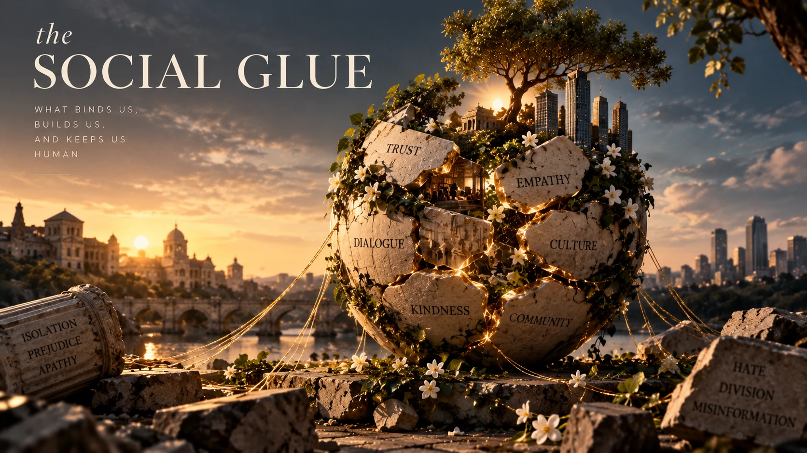

The Crossroads Issue 17
The Social Glue

The human brain evolved to navigate and maintain social structures of life. Primordially, we needed each other to survive. A tribe working together would survive, while a divided one died.
In 2022, 1 in 5 believed that political violence was justified. The world we live in has increasingly begun to see itself as members of opposing squads.
Of the many reasons we humans have brought up to account for our behavior, one is often blamed: social media. We blame it for making us more extremist and less empathetic, and emphasize the need to "touch grass" to escape into the real world. Sure, social media does have an effect on our brains, but maybe not the one you'd expect.
Introducing you to the myth of the ‘filter bubble.’ Many of us have heard about online filter bubbles, where algorithms only show us content that we want to see. Of course, what we want are opinions that agree with ours, thereby omitting opposing views. In this poisonous hole, our view of the world narrows and becomes radicalized. But is that true? An extreme filter bubble is very rare, and studies have found very little evidence for its existence.
The internet is a dump of information, and we are constantly confronted with contrasting views.
The truth is that one is most ideologically isolated in one’s own life. We choose the people we closely interact with, and not too surprisingly, the interactions with people around you are much less diverse than the so-called online bubbles.
The ‘filter bubble’ exists in our real lives, not online. Well then, what is the explanation behind humans turning against each other? Since social media constantly gives us diverse information, shouldn't it make us more open-minded and empathetic?
Unfortunately, our brains are flawed.
The human brain evolved to navigate and maintain social structures of life. Primordially, we needed each other to survive. A tribe working together would survive, while a divided one would die. That's why our brains had to make sure we cooperated. This propagates even today. Sure, you may dislike your neighbor, but since you live in the same area, you support the same cricket team and meet each other at the temple.
As societies grew, we started meeting at shopping malls and town squares. Being physically close made us familiar to each other, and bridged the gap between different worldviews.
Ancestrally, the people around us were similar to us. We liked what was similar to us, and this kept us together despite our differences. Everything was going smoothly until 20 years ago, when we created something that hit our brains like a train: the brand-new digital town square - social media.
Our flawed brain is sorting people into teams, and so, the worst opinion is labeled, assigned, and generalized to everyone on that team (social community).
Something that is striking is that everything that makes us individuals – the ice cream flavor we prefer, the shows we watch, our religions, our fashion sense, and so on – are constantly belittled, as if they are part of mutually exclusive rival teams.
It seems as though the opposite team is almost willfully making the world a worse place, as though they are almost evil, beyond rationality and civil discussion.
While we are on the correct team (obviously it's our team), it may be hard for us to realize that we may seem that way to the people on the other team.
This contrast in belief suddenly becomes a central part of our identity. So, negative things about the "other team" are anchored upon and believed uncritically, whereas those who share your views are praised for their beliefs.
People who think like you are added to your team. They are probably good people in your eyes, because any social group you belong to is good! Therefore, when you face negative information about your group, you dismiss it uncritically.
Social media, driven by engagement, makes it worse, as it wants to keep you online for as long as possible. Well, the most engaging emotion is, unfortunately, anger. The angrier you get, the more likely you are to comment, share, and engage.
This leads social media to amplify the most extreme and controversial opinions. It doesn't just show disagreements; it shows the worst of them.
After this, our brains weren't able to handle the amount of disagreement they faced on social media, and we were not prepared for it. Our brains, in their attempt to simplify, sort everything into categories, whether you like it or not. People, things, and opinions all go into teams.
Researchers call this ‘social sorting.’ On the digital town square, we encounter many people with clashing opinions, but unlike your neighbor, they don't root for your cricket team. You miss the local social glue your brain needs to connect with them.
Essentially, we are dissolving the social glue that acts as a foundation for democracy.
If we think our own neighbors are evil, how can we live together? Is there something we can do? Something more positive? In the end, it is important to be aware of what social media does to your brain and know that It's easier to change yourself than to change the world.